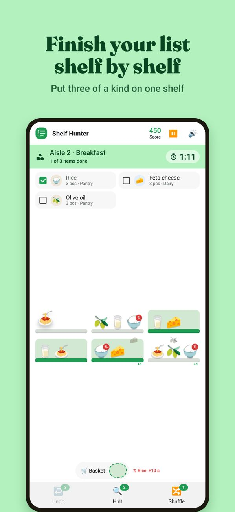

Shelf Hunter: Grocery Puzzle
A supermarket shelf sorting puzzle. Every aisle comes with a shopping list: match three of the same product to clear a shelf, and tick off everything on the list before time runs out.
Download free on the App Store

How to play
- Tap a product, then tap a shelf with a free spot.
- Three of the same product on one shelf clears it.
- When a shelf is empty, the back row moves forward.
- Tick off everything on your list before time runs out and collect your receipt.
What's inside
- Familiar groceries: tomatoes, coffee, bread, detergent and more
- Aisles that get trickier as you go, with back rows, a basket, sale items and sealed boxes
- Daily list: the same puzzle for everyone, a new one every day
- Daily missions, badges, streaks and an aisle map
- Undo, hint and shuffle helpers, combo points and a starred receipt
- No forced ads: watch a short ad only if you want +30 seconds or an extra helper
- Plays offline, no account needed
Download free on the App Store
Questions
Is Shelf Hunter free?
Yes. The game is free to download and play. There are optional in-app purchases (a helper pack and Premium) and optional rewarded ads; nothing is required to finish the aisles.
Does it work offline?
Yes. You can play without an internet connection and without creating an account.
Which devices does it run on?
iPhone, from the App Store.
Support
Questions or problems: oguz.kamburoglu@gmail.com
Privacy policy (Turkish)
Türkçe · English · Deutsch · Español · Français · Português · Русский